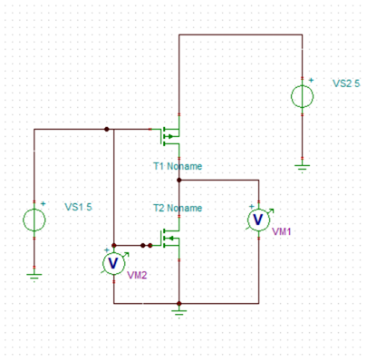
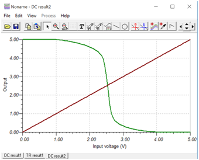
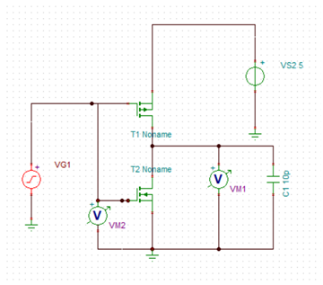
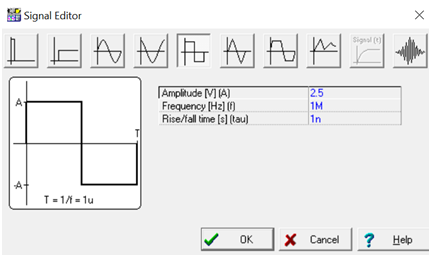
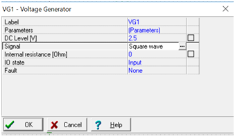
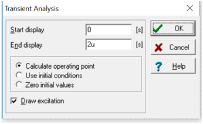
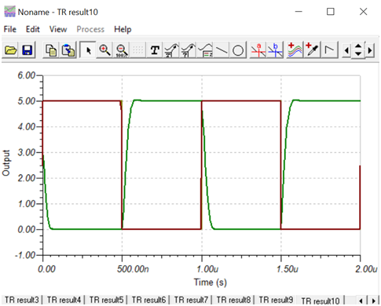

Lab-11
Determination of Voltage transfer
characteristics and transient analysis of CMOS Inverter using SPICE
Simulation (TINA)
Software Required:
1. TINA-9.2 (can be downloaded freely)
2. PC in Windows Platform
Data taken:
Width(NMOS)=2u, W (PMOS)=4u
L=500n
Model: BSIM-3
Supply voltage=5V
Input Voltage VS1 varies in Between 0V to 5V.
Two voltmeter used to plot input and output side graph.
*Note: You need to rotate the PMOS because source will be at top.
A. DC Analysis
Procedure: Connect the circuit as per
previous guideline (Lab-10). Vary input voltage VS1 as per previous method
and observe output. Simulation setup is same as lab-10.


B.Transient Analysis
Same diagram used for CMOS inverter
simulation in previous experiment will be used with minor modification.
Delete the input DC voltage source and connect a voltage generator VG1 in
the same place. Also add one capacitor at output node and change the value
to 10p. Make sure that supply voltage VS2 is set to 5V DC.

1. Double click on voltage generator
symbol, click on signal. By default it is set to Unit step. Click on (…)
and select Square wave as shown below. Set the parameter as displayed.
Click OK.

2. Again in the Voltage generator property
list, set DC level to 2.5V. Click OK.

3.Now from Analysis menu, Select
Transient. Configure as displayed., Click OK. Result will be displayed.


*Note: You may click on View-Separate
curve to separate the input and output.